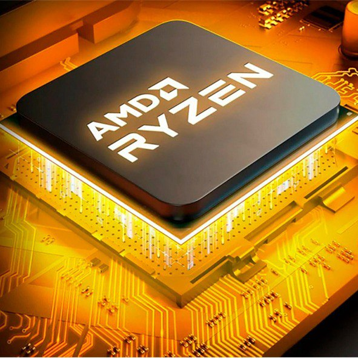

Характеристики процессоров АМД
С момента своего основания фирма AMD (Advanced micro devices) занималась тем, что «доводила до ума» и пускала
в серию модели микросхем, которые по тем или иным причинам не получали должного признания. Но это вовсе не значит, что данный производитель занимался
лишь изготовлением процессоров, которые проектировали другие изготовители, наподобие того, как сейчас поступают в Китае. Вовсе нет, АМД всегда
использовала самые передовые технологии собственного производства и никогда не занималась реверс-инжинирингом продукции других фирм.
В случае с процессорами для персональных компьютеров (ПК), AMD подходила к проблеме следующим образом: изучив требования к системе команд
и необходимой электрической совместимости центрального процессора (ЦП), она как-бы создавала его заново. Таким образом, процессоры AMD имели полную
совместимость с требуемой архитектурой, при этом производитель не нарушал никаких прав оригинального поставщика (например, того же Intel) и на
рынке появлялись уже два продукта, из которых конечный потребитель мог выбирать лучшее. Не следует думать, что эволюция микросхем фирмы АМД была
банальным повторением того, что уже сделали Intel, Motorola, Texas Instruments и прочие производители электронной техники. АМД всегда была по уровню
технологий не хуже своих основных конкурентов, а в некоторых вопросах очень даже здорово опережала их.
Например, первый 64-х битный процессор для настольных ПК, Athlon-64 они сделали почти на год раньше, чем Intel.
А один из Athlon-XP, прямой конкурент существовавшего в то время Pentium-4, в момент выхода стоил в 4 раза дешевле (тонкая ирония от сотрудников АМД по поводу индекса)
своего соперника при той же производительности. Да что и говорить, если уже более, чем полгода с момента выхода последних решений от АМД
в виде Ryzen Threadripper и EPYC, они лидируют на рынке процессоров, а обещанное 9-е поколение от Интел всё ещё только в проекте.
На сегодняшний день продукция АМД представляет собой не только ценовую альтернативу их основным конкурентам – фирме Интел, но и альтернативу
идейную. В отличие от Интел, развитие АМД идёт гораздо более «степенно» и вдумчиво. Бешеной смены типов сокетов (как было, например, с LGA-1151 и LGA-1151-v2)
у АМД не было никогда. Ценовой диапазон продукции от АМД удовлетворит любого пользователя. Производитель представляет огромный выбор продукции во
всех диапазонах: от копеечных ЦП серии FХ, до, в буквальном смысле «золотых» ЦП Threadripper. И, что самое главное, АМД может представить компромиссное решение цена/производительность в абсолютно любом сегменте, в отличие от Интела.
Какой же процессор AMD выбрать именно нам?